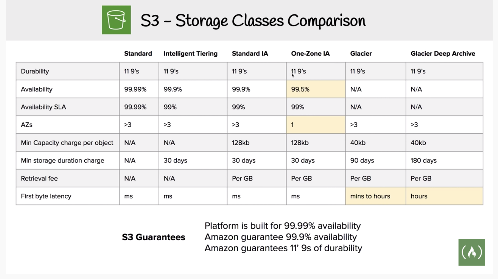

Block Storage vs Object Storage
Block Storage can change one block (piece of the file) that contains the character.
With object Storage, you need to re-upload the whole file for any updates.
Block Storage are typically faster and use less bandwidth, but can cost more than object level storage.
Amazon EBS (Elastic Block Storage)
Amazon EBS offers block-level storage for your EC2 instance - directly attached to EC2 instances, lower latency, good choice for running a database in EC2 instance.
EBS volumes are automatically replicated within the same Availability Zone.
EBS’s scope is a single Availability Zone
EBS Volume types
Amazon EBS provides three volume types: General Purpose SSD, Provisioned IOPS SSD, and magnetic.
- Solid State Drives (SSD)
- General Purpose
- Provisioned IOPS
- Hard Disk Drives (HDD/ Magnetic)
- Throughput Optimized
- Cold
Only SSD can be used for boot volume of EC2 instances
Provisioned IOPS SSD backed Amazon EBS volumes gives you the best performance.
- Lower cost HDD option can be used for additional storage other than boot volumes.
Encryption
Encrypted Amazon EBS volumes
No additional cost
Snapshots
EBS backup: EBS snapshots, stored in Amazon S3.
To provide a even higher level of data durability with EBS, you can use Point-in-time snapshots of your volumes.
You can recreate a new volume from a snapshot anytime.
You can also share snapshots/copy snapshots to different Regions to provide even greater Disaster Recovery protection.
Elasticity
You can change storage type and size without stopping your instances.
EBS Cost
Volumes
All volume types are charged by the amount that is provisioned per month until you release the storage.
EBS volumes persist independently from the instance.
I/O
- I/O is included in the price of General Purpose SSD volumes.
- For Amazon EBS magnetic volumes, I/O is charged by the number of requests that you make to your volume.
- With Provisioned IOPS SSD volumes, you are also charged by the amount you provision in IOPS (multiplied by the percentage of days that you provision for the month).
Snapshots
Added cost of snapshots to Amazon S3 is per GB-month of data storedData transfer
- Inbound data transfer is free
- Outbound data transfer acoss Region incurs cost.
Amazon S3
Objects
Amazon S3 is object-level storage. Objects can be almost any data file, such as images, videos, or server logs. Objects can be up to 5 TB in size.
Durability
Amazon S3 Standard offers 99.99% availability.
Amazon S3 offers 11 9’s of durability for Standard Storage Class as well as for their Infrequent Access and Glacier Class.
One Zone IA has reduced availability (99.95%) and reduced durability (could get destroyed). Good for secondary backup.
Access control
You get fine-grained control over who can access your data by using AWS Identity and Access Management (IAM) policies, Amazon S3 bucket policies, and even per-object access control lists(ACL).
By default, none of your data is shared publicly.
You can also encrypt your data in transit and choose to enable server-side encryption on your objects.
S3 Storage Classes
S3 Standard
Amazon S3 Standard is designed for high durability, availability, and performance object storage for frequently accessed data.
S3 Intelligent-Tiering
Optimize costs by automatically moving data to the most cost-effective access tier, without performance impact or operational overhead.
There are no retrieval fees when you use the Amazon S3 Intelligent-Tiering storage class, and no additional fees when objects are moved between access tiers.
It works well for long-lived data with access patterns that are unknown or unpredictable
Amazon S3 Standard-Infrequent Access (Amazon S3 Standard-IA)
For data that is accessed less frequently, but requires rapid access when needed.
This combination of low cost and high performance makes Amazon S3 Standard-IA good for long-term storage and backups, and as a data store for disaster recovery files.
Amazon S3 One Zone-Infrequent Access (Amazon S3 One Zone-IA)
Amazon S3 One Zone-IA stores data in a single Availability Zone and it costs less than Amazon S3 Standard-IA.
Amazon S3 One Zone-IA works well for customers who want a lower-cost option for infrequently accessed data, but do not require the availability and resilience of Amazon S3 Standard or Amazon S3 Standard-IA.
A good choice for storing secondary backup copies of on-premises data or easily re-creatable data. You can also use it as cost-effective storage for data that is replicated from another AWS Region by using Amazon S3 Cross-Region Replication.
Amazon S3 Glacier
A secure, durable, and low-cost storage class for data archiving.
You can upload objects directly to Amazon S3 Glacier, or use Amazon S3 lifecycle policies to transfer data between any of the Amazon S3 storage classes for active data (Amazon S3 Standard, Amazon S3 Intelligent-Tiering, Amazon S3 Standard-IA, and Amazon S3 One Zone-IA) and Amazon S3 Glacier
Amazon S3 Glacier Deep Archive
It supports long-term retention and digital preservation for data that might be accessed once or twice in a year.
The lowest-cost storage class for Amazon S3.
All objects that are stored in Amazon S3 Glacier Deep Archive are replicated and stored across at least three geographically dispersed Availability Zones, and these objects can be restored within 12 hours.
Amazon S3 Bucket
- Amazon S3 stores data inside buckets. Buckets are logical containers for objects.
- Buckets are essentially the prefix for a set of files, and must be uniquely named across all of Amazon S3 globally.
- You can control access for each bucket—who can create, delete, and list objects in the bucket.
- You can also view access logs for the bucket and its objects.
- YOU can choose the geographical region where Amazon S3 stores the bucket and its contents.
- Because buckets can be accessed using path-style and virtual-hosted–style URLs, we recommend that you create buckets with DNS-compliant bucket names.
Bucket Naming rules
- Bucket names must be a series of one or more labels. Adjacent labels are separated by a single period (.). Bucket names can contain lowercase letters, numbers, and hyphens. Each label must start and end with a lowercase letter or a number.
- Bucket names must not be formatted as an IP address (for example, 192.168.5.4).
- Bucket names must start with a lowercase letter or number.
- Bucket names must not contain uppercase characters or underscores.
- Bucket names should be between 3 and 63 characters long.
Bucket URLs
Amazon S3 supports both virtual-hosted–style and path-style URLs to access a bucket.
path-style URL endpoint
https://s3.ap-northeast-1.amazonaws.com/bucket-name
virtual hosted-style URL endpoint
https://bucket-name.s3-ap-northeast-1.amazonaws.com
Hosting static website on S3
You can host static websites on S3 but are not able to host any dynamic sites designed with server side scripting.
For hosting a static website, the minimum two files you need is index.html and error.html
S3 Transfer Acceleration
S3 Transfer Acceleration uses CloudFront’s globally distributed edge locations to provide fast file transfers over long distances.
You might want to use Transfer Acceleration on a bucket for various reasons, including the following:
- You have customers that upload to a centralized bucket from all over the world.
- You transfer gigabytes to terabytes of data on a regular basis across continents.
- You underutilize the available bandwidth over the Internet when uploading to Amazon S3.
Scaling
Amazon S3 automatically manages the storage behind your bucket while your data grows. You can get started immediately, and your data storage will grow with your application needs.
Amazon S3 also scales to handle a high volume of requests. You do not need to provision the storage or throughput, and you are billed only for what you use.Pricing
You pay for: - Storage, gigabytes per month;
- transfer OUT to other Regions;
- PUT, COPY, POST, LIST, and GET requests.
You don’t pay for:
- transfers IN to Amazon S3
- transfers OUT to Amazon CloudFront edge locations or EC2 instances within that same Region
Factors influencing S3 pricing
- Storage class type
- Amount of storage
- Requests
- Data transfer
Amazon Elastic File System
File storage for use with AWS services and on-premises resources.
Amazon S3 Glacier
Three retrieval options:
expedited: 1-5 minutes
standard: 3-5 hours
bulk: 5-12 hours
Archive
Archive: Any object such as a photo, video, file, or document that you store in Amazon S3 Glacier.
Archive is the base unit of storage in Amazon S3 Glacier. Each archive has its own unique ID and can also have a description.Vault
A container for storing archives. When you create a vault, you specify the vault name and the region in which you would like to locate the vault.
Vault Access Policy
One vault access policy can be created for each vault to manage access permissions for that vault. You can also use a vault lock policy to make sure a vault cannot be altered.
Each vault can have one vault access policy and one vault lock policy that is attached to it.Using S3 Glacier
AWS Management Console.
Only a few operations—such as creating and deleting vaults, and creating and managing archive policies—are available in the console.
Amazon S3 Glacier REST APIs
AWS Java or .NET SDKs
AWS CLI
Amazon S3 with lifecycle policies
Pricing
While both services have per-request charges, Amazon S3 charges for PUT, COPY, POST, LIST, GET operations. In contrast, Amazon S3 Glacier charges for UPLOAD and retrieval operations.
Because Amazon S3 Glacier was designed for less-frequent access to data, it costs less for storage but more for each RETRIEVAL REQUEST than Amazon S3.
Amazon S3 lifecycle policies
You should automate the lifecycle of the data that you store in Amazon S3. By using lifecycle policies, you can cycle data at regular intervals between different Amazon S3 storage types. This automation reduces your overall cost, because you pay less for data as it becomes less important with time.
Server-side Encryption
Server-side encryption is focused on protecting data at rest.
- With both Amazon S3 and Amazon S3 Glacier, you can securely transfer your data over HTTPS.
- Any data that is archived in Amazon S3 Glacier is encrypted by default.
- With Amazon S3, your application must initiate server-side encryption. You can accomplish server-side encryption in Amazon S3 in several ways.
Amazon S3-managed encryption keys (SSE-S3)
Customer-provided Encryption Keys (SSE-C)
AWS Key Management Service (AWS KMS)
EFS vs EBS vs S3
Amazon EBS delivers high-availability block-level storage volumes for Amazon Elastic Compute Cloud (EC2) instances. It stores data on a file system which is retained after the EC2 instance is shut down.
Amazon EFS offers scalable file storage, also optimized for EC2. It can be used as a common data source for any application or workload that runs on numerous instances. Using an EFS file system, you may configure instances to mount the file system.
The main differences between EBS and EFS is that EBS is only accessible from a single EC2 instance in your particular AWS region, while EFS allows you to mount the file system across multiple regions and instances.
Finally, Amazon S3 is an object store good at storing vast numbers of backups or user files. Unlike EBS or EFS, S3 is not limited to EC2. Files stored within an S3 bucket can be accessed programmatically or directly from services such as AWS CloudFront. This is why many websites use it to hold their content and media files, which may be served efficiently from AWS CloudFront.
Storage Options for EC2
Two Direct options (Can be used for root volume):
Amazon Elastic Block Store (EBS)
Durable block storage service that is designed to be used with Amazon EC2 for both throughput-and transaction-intensive workloads.
Amazon EC2 Instance Store
Temporary block-level storage for your instance. This storage is located on disks that are physically attached to the host computer.
Instance Store works well when you must temporarily store information that changes frequently, such as buffers, caches, scratch data, and other temporary content. You can also use Instance Store for data that is replicated across a fleet of instances, such as a load balanced pool of web servers.
If the instances are stopped—either because of user error or a malfunction—the data on the instance store will be deleted.
Rebooting does not erase data in instance storage
Other options(not for root volume):
Mount an Amazon Elastic File System (EFS) file system
Amazon EFS is designed to provide massively parallel shared access to thousands of Amazon EC2 instances, enabling your applications to achieve high levels of aggregate throughput and IOPS with consistent low latencies.
Connect to Amazon Simple Storage Service(Amazon S3)
An object storage service
- A vault in S3 Glacier is the container for storage archieves
- EBS is used when requiring a encryption solution